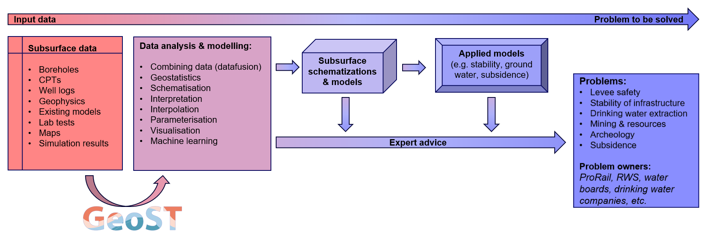
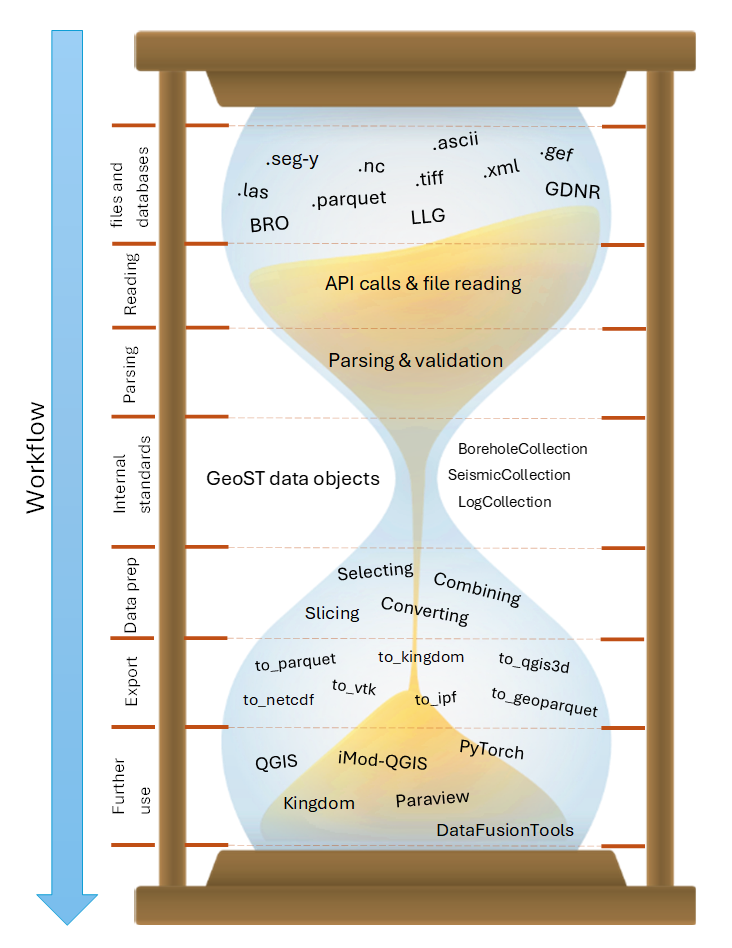

About GeoST#
Subsurface data lie at the basis of solving problems on topics of levee safety, stability of infrastructure, drinking water extraction, (sand) mining, subsurface energy systems, archeology, CO2 storage, subsidence, contamination and the list goes on. Subsurface data is used by experts to advice on solutions, to visualize and explain subsurface data in the context of the above-mentioned topics and most importantly to create tailor-made schematizations of the subsurface that directly serve as an input for calculating and mapping stability, subsidence, groundwater flow, thermal properties, subsurface resources etc.
These often complex and high-stake problems require good, reproducible and thoroughly tested workflows all the way from subsurface data sources (BRO, GDNR, local files) to for instance 3D subsurface models. Therefore, Deltares started the development of GeoST as a tool to support the use of subsurface data in Python. It provides easy ways to access, work with and combine many different sources of subsurface data by providing frequently used (spatial) selection functionalities, analytical solutions and reading and export methods for industry standard third party software.
As shown in the figure below, it is aimed at bridging the gap between subsurface data sources and all the analyses, visualisation and modelling efforts that follow. Simple visualisations and analyses may directly be used to give expert advice or subsurface data can be used to create more advanced schematizations and models that serve as an input for applied models.

Design philosophy#
The design GeoST can best be described as an hourglass. At the top of this hourglass are the many different sources through which subsurface data are distributed. This information is read, parsed, validated and subsequently stored in standarized data objects (the neck of the hourglass). From here the user can apply basic and commonly used functionality on the loaded data. Think of making selections, combining data, conversions, slicing operations etc. The results can then be exported to various formats and/or be further used in different softwares and tools, depending on the task at hand.
At the basis of the internal data structures lie simple Pandas DataFrames, allowing the more advanced user to go far beyond the standard set of methods that GeoST offers.

Current development strategy#
GeoST is being developed incrementally based on project needs. This means that every time we require certain functionality within a project, we identify which part of this functionality is eligible for addition to GeoST. This part is then developed to the high coding, testing and documentation standards that we require for GeoST. This may take more resources at first, but will pay itself of as the developed functionality is reused in other projects.